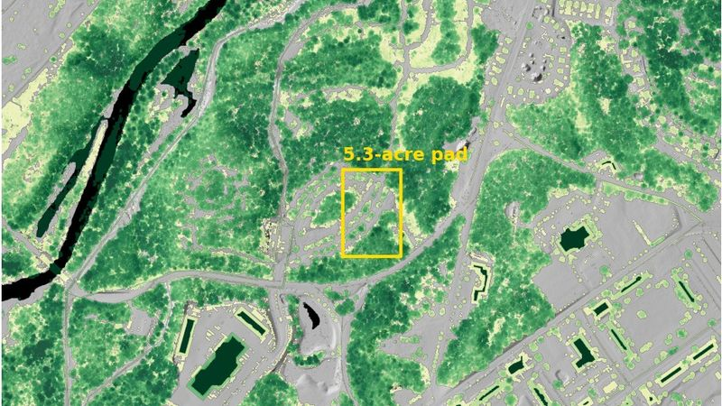
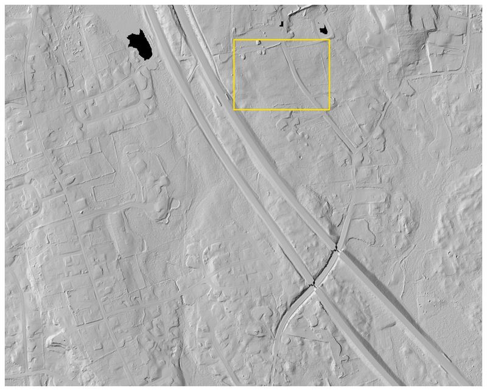
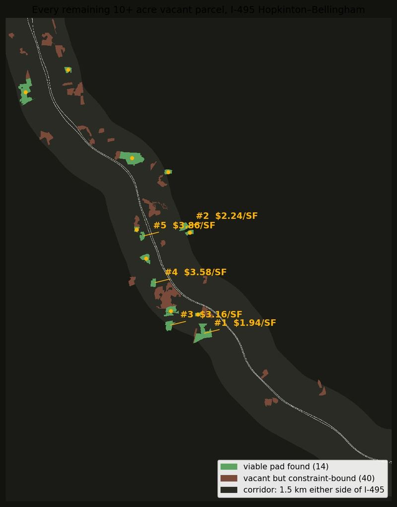

The pad under the forest
Public lidar landed 17 days after a 47-acre campus was announced — catching the parcel in its last weeks as forest. Earthwork priced three ways on the pad where the largest building actually went.

The warehouse that wasn't
150 wooded acres at the Route 44 / I-495 interchange. A 673,000 sq ft warehouse proposal was withdrawn in 2024 — the parcel is still forest. More than half the surrounding land sits in wetland setbacks, and the pad had to be found, not drawn.

Three pads, three price tags
Rolling glacial forest on the I-495 logistics belt. Every possible 16-acre pad position screened and the three best priced — the cheapest dirt sits closest to the wetlands, and the grading bill swings by $2.5M depending on where the building lands.

Fifty-four parcels. Fourteen can hold a building.
The question before any single-site study: which sites are worth studying? Every vacant 10+ acre parcel within 1.5 km of 20 km of I-495, Hopkinton through Bellingham, screened and ranked by sitework cost. The affordable dirt turns out to be at the southern end.
Three sites, one pipeline
Because every project runs the identical workflow, the results are directly comparable — sitework cost belongs to the parcel, and it varies more than you might expect. Across these three, the same analysis produced a 4× spread in sitework cost per square foot of pad.
| Site | Pad | Earthwork @ $20/yd³ | Clearing (mid) | Access | Sitework $/SF of pad |
|---|---|---|---|---|---|
| 01 Devens | 5.3 ac / 232,600 SF | $0.49M ± $57k | $16k | regrade a 21% bank | $2.2 |
| 02 Middleborough | 16.3 ac / 710,000 SF | $1.69M ± $173k | $50k | flat, no penalty | $2.5 |
| 03 Hopkinton | 16.3 ac / 710,000 SF | $6.34M ± $173k | $68k | 11% grade, must contour | $9.0 |
± ranges are grading contingencies derived from the lidar's published 10 cm vertical accuracy over each pad (conservative — verified accuracy on these sites was 2–7.6 cm). $/SF uses the measured pad area; per-building-SF ≈ 2× these figures at a 50%-coverage single-story assumption. Access penalties are not dollarized.